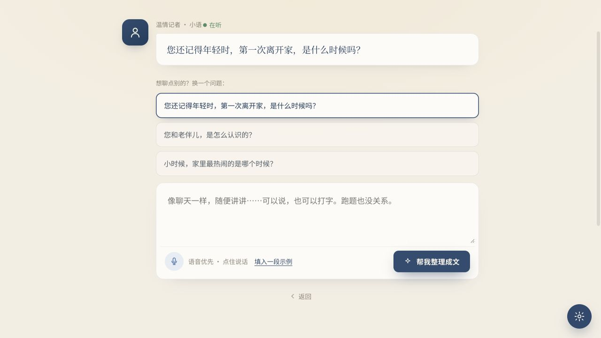
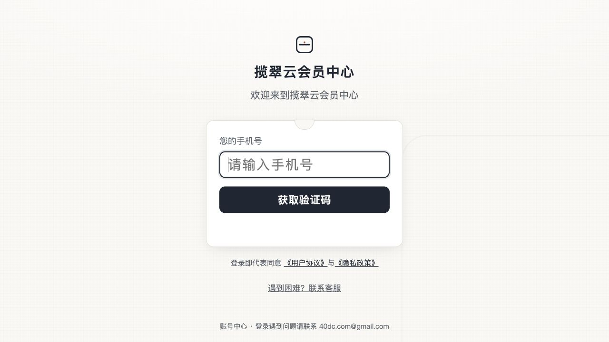

一句话旅程
【已确认】 公开网站承担“理解价值—建立信任—选择方案—进入体验/登录”的获客前台；页面描述的完整履约链是“口述采集 → AI 初稿 → 子女修订 → 装帧定稿 → 印刷邮寄”。E-J-001 / E-J-002
惜墨 XIMO 网站版用户旅程 · 页面取证版
【已确认】 公开网站承担“理解价值—建立信任—选择方案—进入体验/登录”的获客前台；页面描述的完整履约链是“口述采集 → AI 初稿 → 子女修订 → 装帧定稿 → 印刷邮寄”。E-J-001 / E-J-002
【合理推断】 核心产品不是单次 AI 写作，而是把家庭记忆转成可确认、可追溯、可交付实体书的高信任服务。网页的主任务是降低“把父母人生交出去”的心理风险。E-J-009
【合理推断】 主要决策者为子女/家属；主要讲述者为父母或长辈。两者角色、数字能力和风险感知不同。
【已确认】 “老人开口讲，AI 温柔织成书，精装成册、邮寄到家”；同时强调“不杜撰”和家人隐私。
【未知】 登录后项目工作台、生成结果、逐章修订、付款、印刷和物流均未实操验证。
每一列是一段旅程；“系统响应”只写界面可见或页面明示内容。未进入的后台环节不伪装成事实。
| 泳道 | 1 发现 | 2 建立信任 | 3 比较方案 | 4 免费试讲 | 5 登录/下单入口 | 6 口述采集 | 7 成稿与修订 | 8 定稿履约 |
|---|---|---|---|---|---|---|---|---|
| 用户目标 | 判断是否值得做 为父母留下系统回忆录。 |
确认不会乱写 理解隐私、授权与质量承诺。 |
判断预算与服务 比较 L1-L4。 |
低门槛试一段 不用注册，文字或语音输入。 |
建立账号/购买 进入手机号验证码页。 |
持续讲述 App/电话/上门任选。 |
看懂并批准书稿 逐章审阅、修订。 |
收到确认过的成品 版式、印刷、物流。 |
| 用户动作 | 【已确认】 浏览首页，阅读“口述→AI织书→邮寄”。 E-J-001 |
【已确认】 查看样本、三色机制、隐私/AI/退款/授权页。 E-J-005~007 |
【已确认】 查看四档价格、页数、册数、修订轮次与服务。 E-J-002 |
【已确认】 点击开始试讲；选择推荐问题；可填入页面示例；可点“帮我整理成文”（本次未点）。 E-J-003 |
【已确认】 普通登录跳到 Pithclaw；选择初心版跳到 membership 登录回跳链。 E-J-010 |
【合理推断】 根据官网描述，用户可在 App 续讲，或预约电话/上门。未验证运行态。 | 【合理推断】 根据定价与协议描述，子女逐章审阅，人工总编复核。界面未知。 | 【合理推断】 用户确认后进入印刷并可查看物流；实际状态机未知。 |
| 界面 / 系统响应 | 首页给出情绪价值、三步解释、数据背书、四档入口。 | 展示绿/蓝/琥珀来源、门禁、人工复核、用户确认等声明。 | 卡片式价格；完整流程；满意保障、样章先看、无隐藏消费。 | 显式 Agent“温情记者·小语”，状态“在听”，三个问题，语音按钮与文本框。 | 普通登录品牌为惜墨；购买登录品牌为“揽翠云会员中心”。 | 【未知】 录音、转写、自动保存、项目切换的实际响应。 | 【未知】 草稿、来源标注、版本差异、批注、审批界面。 | 【未知】 定稿锁定、支付、生产、物流与售后界面。 |
【已确认】 首页、样本和法律页反复解释“不杜撰、隐私、人工把关、用户确认”。这说明用户的首要阻力不是不会写，而是不敢交付家庭记忆。E-J-005 / E-J-006
【已确认】 在线体验写明无需注册，提供示例填充和推荐问题。它是将抽象承诺变成可感知结果的核心转化节点。E-J-003
【已确认】 L1 购买入口跳到 account.pithclaw.com 的“揽翠云会员中心”。【合理推断】 在高信任家庭内容场景中，这可能削弱连续性与支付信心。E-J-010
【已确认】 页面同时支持长辈讲述、子女修订与协助安装；适老设置提供大字、字体、主题和减弱动效。E-J-004 / E-J-008
【已确认】 电话访谈、上门陪访、人工编辑、真人客服贯穿文案。【合理推断】 这是一条人机协作服务链，不是完全自助 SaaS。
【已确认】 退款与 AI 声明均写明用户确认后才进入印刷，形成内容正确性和生产成本之间的控制点。E-J-007


主链路、角色、关键动作、系统可见响应、跨域跳转和主要证据缺口已覆盖，可以进入 Agent 契约阶段。不会把“页面宣称”改写成“系统运行已验证”。
【未知】 公开网页没有展示的后台能力，既不能认定存在，也不能认定缺失。本报告将它们放进未知项和 To-Be 设计，而非 As-Is 事实。